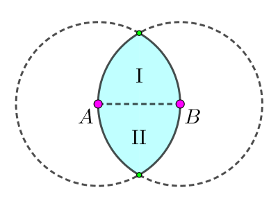

给定平面上 $n$ 个点 $\left( x_i, y_i \right)$，你需要选取尽可能多的点，使得这些点两两 Euclid 距离不超过 $d$。
求选取的点的数量的最大值，并给出一组构造。
第一行包含两个正整数 $n, d$ ($n \leq 100; d \leq 10000$)，分别表示点的个数和距离限制。
接下来 $n$ 行，每行两个整数 $x_i, y_i$ ($-10000 \leq x_i, y_i \leq 10000$)，描述第 $i$ 个点的坐标。
第一行输出一个整数 $m$，表示选取的点的数量的最大值。
第二行输出 $m$ 个不同的 $1 \sim n$ 中的整数，依次表示选取的点 (在输入中) 的标号。
如果有多组点数最多的解，输出任意一组均可。
考虑建立图论模型：如果两个点的距离 $> d$，则我们在其中连接一条边，设最终得到图 $G$。
于是问题就转化了求 $G$ 的一个最大独立集。
完了！最大独立集可是 NPC 问题啊！那可怎么办呢？
不用怕啊，最大独立集是 NPC 并不代表原问题是 NPC 啊，因为我们归约的方向是向难走的。我们或许考虑可以利用一下 Euclid 距离的一些性质。
设点数最多的点集为 $S$，不妨设 $\left| S \right| \geq 2$。考虑 $S$ 中距离最大的点对 $A, B$，设 $\left| A B \right| = R$。于是 $S$ 中剩下的所有点到 $A, B$ 的距离都不能超过 $R$，于是这些点一定在一个纺锤形区域中，如下图中的青色区域：
设这个纺锤形区域中的所有点为 $K$。则现在只需要考虑在 $K$ 中选取尽可能多的点，使得两两距离 $\leq d$，即求 $K$ 导出的子图 $G \left[ K \right]$ 的最大独立集。
这个子图 $G \left[ K \right]$ 有什么性质呢？不难发现，Ⅰ 中的任意两个点的距离都 $\leq R$，从而 $\leq d$！也就是说，$G \left[ K \right]$ 中所有的边都是从 Ⅰ 区域的点连向 Ⅱ 区域的，因此，$G \left[ K \right]$ 一定是一个二分图！
而二分图的最大独立集，是一个经典的问题，首先将其转化为最小点覆盖的补集，然后使用 König 定理求出一组最小点覆盖。
因此，我们就得到了解决整个问题的一个算法：
枚举 $A, B$ 为集合中最远的两个点。
取所有满足 $\max \left\{ \left| P A \right|, \left| P B \right| \right\} \leq \left| A B \right|$ 的点 $P$，取这些点在 $G$ 中的导出子图。
由上述分析知该图一定是二分图，因此求出它的一组最大独立集，更新答案。
时间复杂度 $O \left( n^4 \right)$，常数较小。当然可以通过剪枝与适当的枚举顺序 (按照 $\left| A B \right|$ 从大到小的顺序枚举点对)，期望时间复杂度就在 $O \left( n^3 \right)$ 左右。
#include <bits/stdc++.h>
using std::cin;
using std::cout;
typedef std::pair <int, int> pr;
const int N = 108;
typedef std::bitset <N> bitset;
int n, d, V = 0, ans = 1;
int x[N], y[N], dist2[N][N];
int ps[N], col[N], match[N];
bitset used, G[N];
pr all[N * N];
int best[N];
void dye(int x) {
for (int y = G[x]._Find_first(); y != N; y = G[x]._Find_next(y))
if (!~col[y]) col[y] = !col[x], dye(y);
}
bool augment(int x) {
for (int y = G[x]._Find_first(); y != N; y = G[x]._Find_next(y))
if (!used.test(y) && (used.set(y), !~match[y] || augment(match[y])))
return match[x] = y, match[y] = x, true;
return false;
}
void konig(int x) {
for (int y = G[x]._Find_first(); y != N; y = G[x]._Find_next(y))
if (!used.test(y)) used.set(y), konig(match[y]);
}
void work(int u, int v) {
int i, j; V = 0;
for (i = 0; i < n; ++i)
if (i != u && i != v && dist2[u][i] <= dist2[u][v] && dist2[i][v] <= dist2[u][v])
ps[V++] = i;
if (2 + V <= ans) return;
for (i = 0; i < V; ++i)
for (G[i].reset(), j = 0; j < V; ++j) G[i].set(j, dist2[ps[i]][ps[j]] > d);
memset(col, -1, V << 2), memset(match, -1, V << 2);
for (i = 0; i < V; ++i) if (!~col[i]) col[i] = 0, dye(i);
for (i = 0; i < V; ++i) if (col[i]) used.reset(), augment(i);
used.reset();
for (i = 0; i < V; ++i) if (col[i] && !~match[i]) konig(i);
for (i = 0; i < V; ++i) if (col[i] && ~match[i] && !used.test(match[i])) used.set(i);
if (2 + V - (int)used.count() <= ans) return;
best[0] = u, best[1] = v, ans = 2;
for (i = 0; i < V; ++i) if (!used.test(i)) best[ans++] = ps[i];
}
int main() {
int i, j, m = 0;
std::ios::sync_with_stdio(false), cin.tie(NULL);
cin >> n >> d, d *= d;
for (i = 0; i < n; ++i) cin >> x[i] >> y[i];
for (i = 0; i < n; ++i)
for (j = 0; j < n; ++j) dist2[i][j] = (x[i] - x[j]) * (x[i] - x[j]) + (y[i] - y[j]) * (y[i] - y[j]);
for (i = 0; i < n; ++i)
for (j = i + 1; j < n; ++j)
if (dist2[i][j] <= d) all[m++] = pr(-dist2[i][j], i | j << 8);
std::sort(all, all + m);
for (i = 0; i < m; ++i) work(all[i].second & 255, all[i].second >> 8);
cout << ans << '\n', std::sort(best, best + ans);
for (i = 0; i < ans; ++i) cout << best[i] + 1 << (i == ans - 1 ? '\n' : ' ');
return 0;
}
坑1：使用 König 定理时要区分二分图的左部和右部，因此需要先对原图进行一次 $2-$染色。
坑2：可以使用剪枝和适当的枚举顺序，如有必要可以加一点随机化来减少期望时间复杂度。